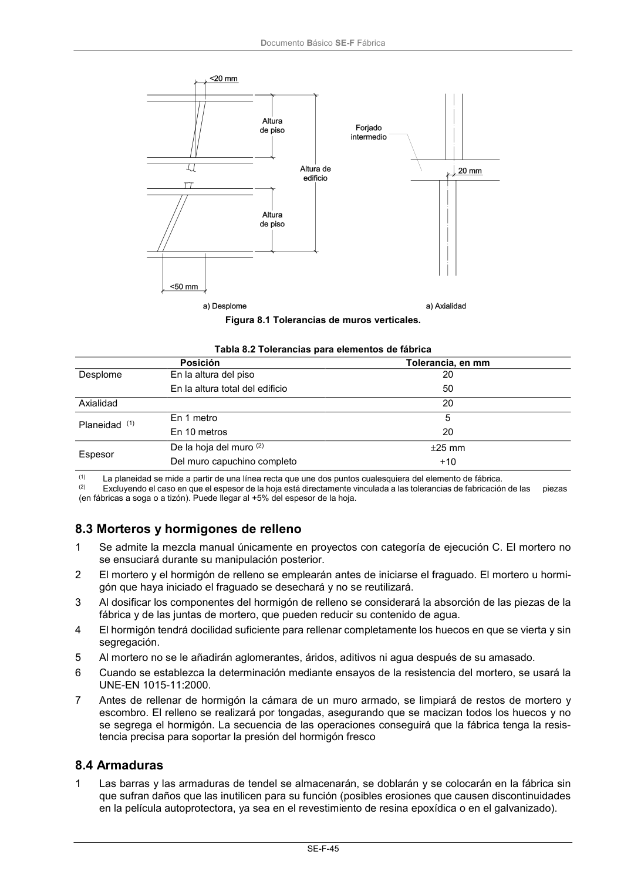

DB-SE-F Fábrica · edición 2019-12-20 · capa oficial
Documento DB-SE-F-oficial · SHA-256 del PDF e3e0805c3b4c307519c26dc34c3fdbf143d842edd013c91b0f52d2c73403d91c
Copia fiel del PDF fuente · Fuente oficial
Ficha de la disposición en la fuente oficial
Formatos: JSON del segmento · Markdown
8.3 Morteros y hormigones de relleno 1 Se admite la mezcla manual únicamente en proyectos con categoría de ejecución C. El mortero no se ensuciará durante su manipulación posterior. 2 El mortero y el hormigón de relleno se emplearán antes de iniciarse el fraguado. El mortero u hormi- gón que haya iniciado el fraguado se desechará y no se reutilizará. 3 Al dosificar los componentes del hormigón de relleno se considerará la absorción de las piezas de la fábrica y de las juntas de mortero, que pueden reducir su contenido de agua. 4 El hormigón tendrá docilidad suficiente para rellenar completamente los huecos en que se vierta y sin segregación. 5 Al mortero no se le añadirán aglomerantes, áridos, aditivos ni agua después de su amasado. 6 Cuando se establezca la determinación mediante ensayos de la resistencia del mortero, se usará la UNE-EN 1015-11:2000. 7 Antes de rellenar de hormigón la cámara de un muro armado, se limpiará de restos de mortero y escombro. El relleno se realizará por tongadas, asegurando que se macizan todos los huecos y no se segrega el hormigón. La secuencia de las operaciones conseguirá que la fábrica tenga la resis- tencia precisa para soportar la presión del hormigón fresco
